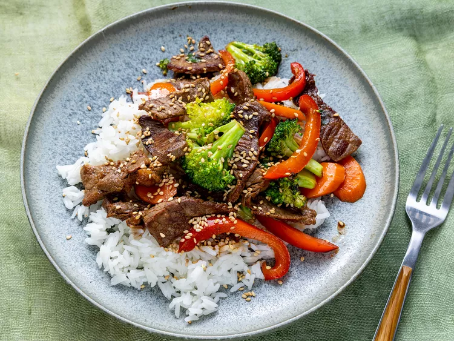

beef stir fry recipe

Need to use up some of your leftover vegetables and other pantry staple ingredients? Look no further than a classic beef
stir-fry. This beef and broccoli stir-fry comes together in just 25 minutes and only requires ingredients that you
probably already have. And if you don't? You can just skip them!
This dish is packed with veggies, beef, and saucy flavors for a weeknight dinner warrior that checks all the boxes.
Served with rice or lo mein noodles, this will be the best beef stir-fry you've ever made.
ingredients
- 2 tablespoons vegetable oil
- 1 pound beef sirloin,cut into 2-inch strips
- 1 1/2 cups fresh brocolli florets
- 1 red bell pepper, cut into matchsticks
- 2 carrots,thinly sliced
- 1 green onion,chopped
- 1 teaspoon minced garlic
- 2 tablespoons soy sauce
- 2 teaspoons sesame seeds,toasted
How to make the beef striy fry
- gather all of the ingredients
- Heat vegetable oil in a large wok or skillet over medium-high heat;cook and stir beef until browned, 3-4 minutes
- Move beef to the side of the wok and add the brocolli,bell pepper, carrots, green onion, and garlic to the centre of the wok.
Cook and stir vegetables for 2 minutes.
- stir beef into vegetables and season with soy sauce and sesame seeds.Continue to cook and str until vegetables are tender,about
2 more minutes